Problem Statement
Robotic fulfillment warehouses function as tightly coupled physical systems, but existing software represents them as fragmented data streams with little operational context. Failures occur in physical space, such as stalled robots or blocked conveyors, yet managers must interpret abstract logs and metrics to understand what is happening and where. This gap between physical operations and digital visibility makes it difficult to identify bottlenecks, understand system impact, and act quickly, increasing cognitive load and causing delays that directly affect throughput and reliability.
Solution Implemented
We designed a real-time physical-to-digital monitoring system that translates live robotic operations into a clear, spatially grounded digital view of the warehouse. The interface mirrors the physical layout and flow of RAPTOR systems, using visual states and progressive disclosure to surface system health, failures, and dependencies at a glance. By aligning digital representation with physical behavior, the system enables faster understanding, quicker decisions, and confident action across roles.
The Team
Design Team - 1 Interaction Designer (Me), 1 Visual Designer
Product Team - 1 Product Manager
Development Team - 1 Database Architect, 2 Front-end Engineers, 3 Back-end Engineers, 1 QA Engineer
Context
Raptor system (Robotic Arm Picking and Order Release) is designed to automate the fulfillment of mixed (rainbow) pallets for distribution.
This involves using robotic arms to pick and place items onto pallets based on orders received from the Host Warehouse Management System (WMS).
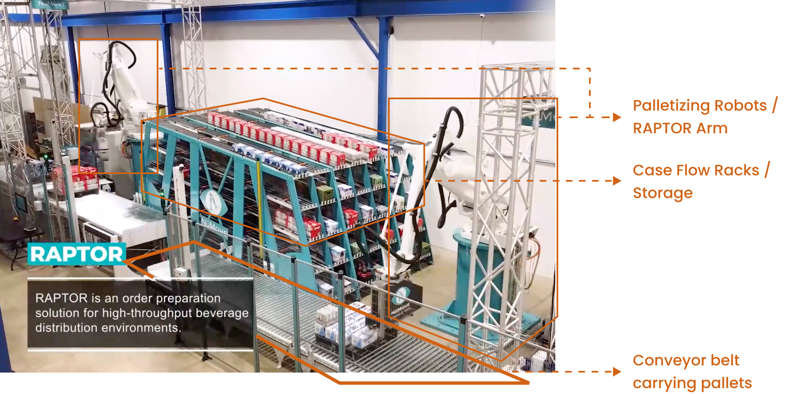
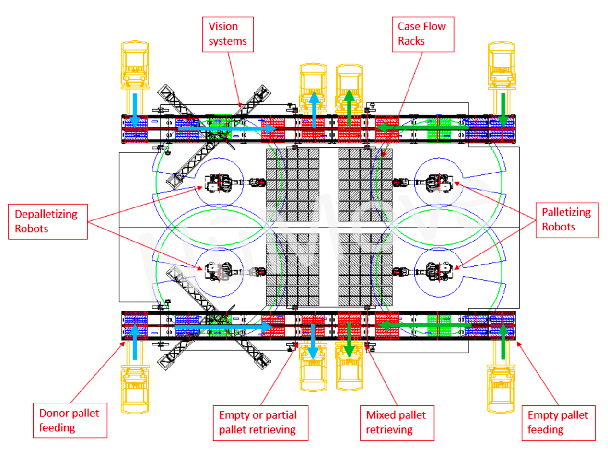
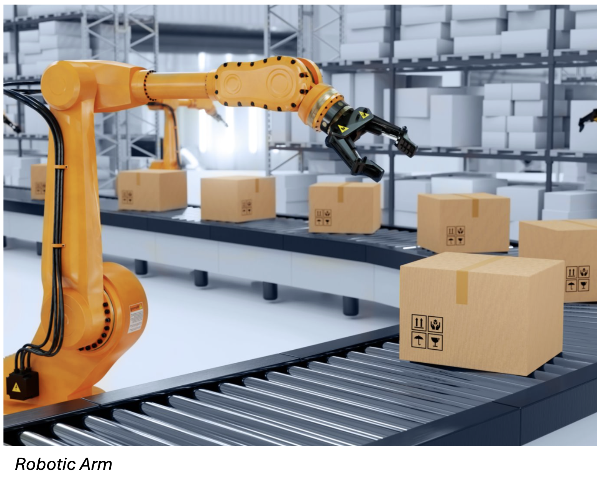
Market Research
We went through multiple industry software which work with similar warehouse machinery and noted down pointers:
- Some mapping between the physical-to-digital context reduces cognitive load significantly.
- Dashboards can serve two purpose - either help with passive monitoring or help understand the metrics. The best dashboards solved partially for both the cases.
- Heat maps, color-coding, drill-down of information are common techniques used to reduce the mental load.
In our case, we had a tight deadline and development resource availability. We started designing taking into consideration all constraints and use cases.
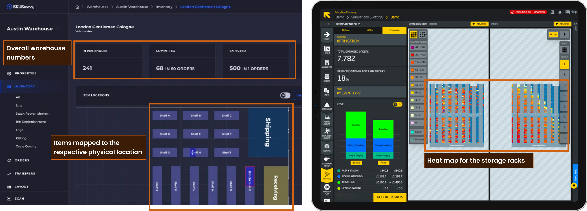
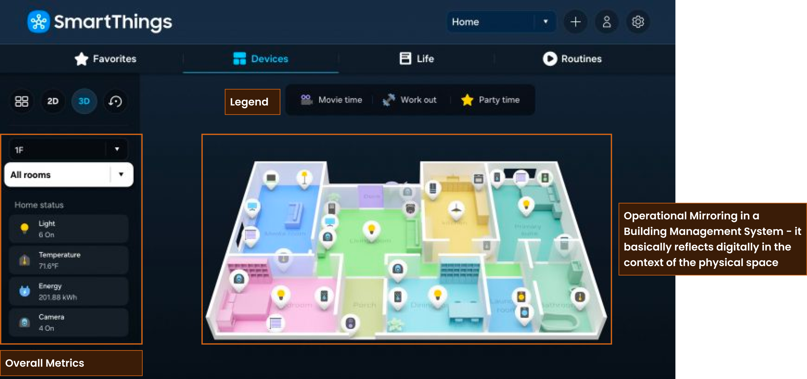
Design Iterations
We started drafting out possible layouts for the Visualisation screen. Went through multiple rounds of iterations; documented some learnings below:
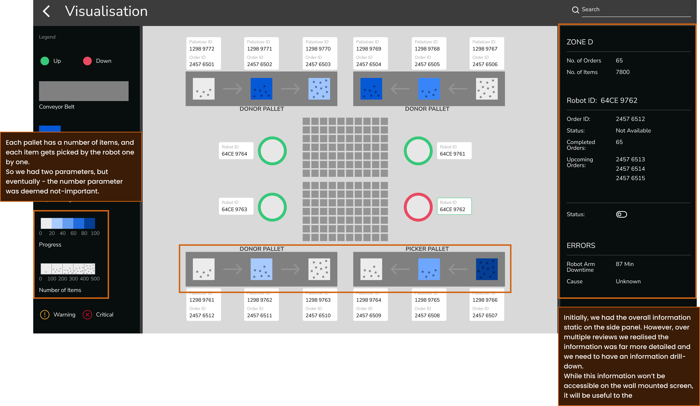
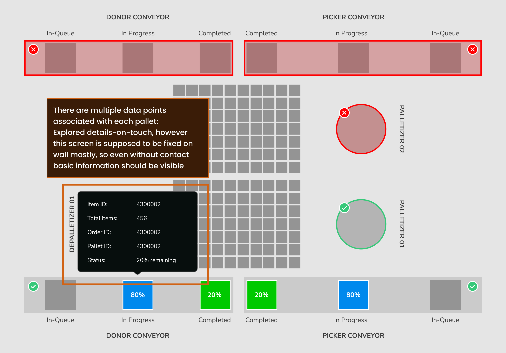
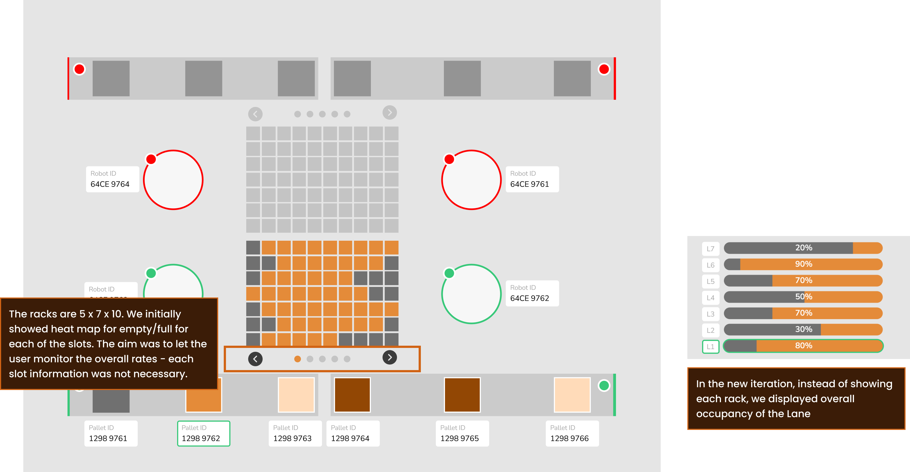
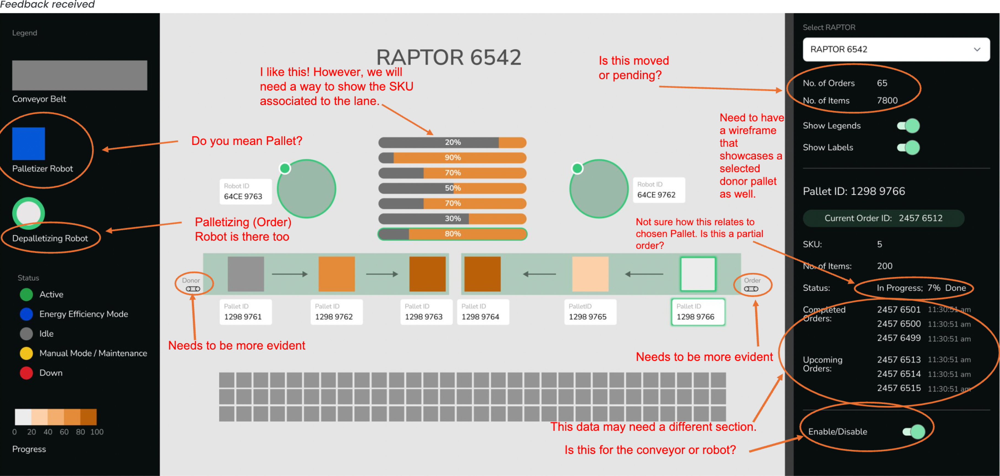
Information Architecture
We realised we needed to display a lot of information, so we made an Information chart inorder to display the hierarchy and dependency.
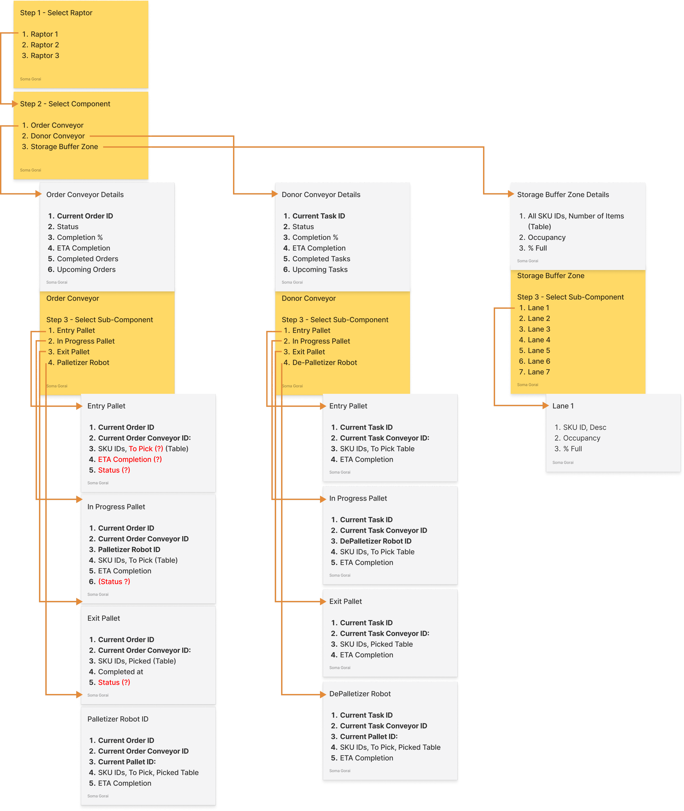
To ensure that all the information was displayed logically as per need to the warehouse managers monitoring on their computers, we implemented detailed progressive disclosure of the information.
Selecting parent, then child, then sub-child - ensured that the details were shown in a hierarchy.
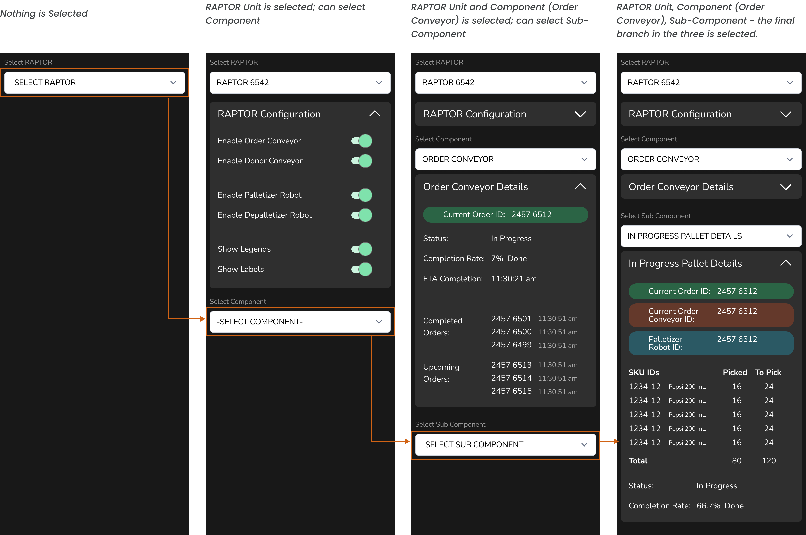
Final Dashboard UI
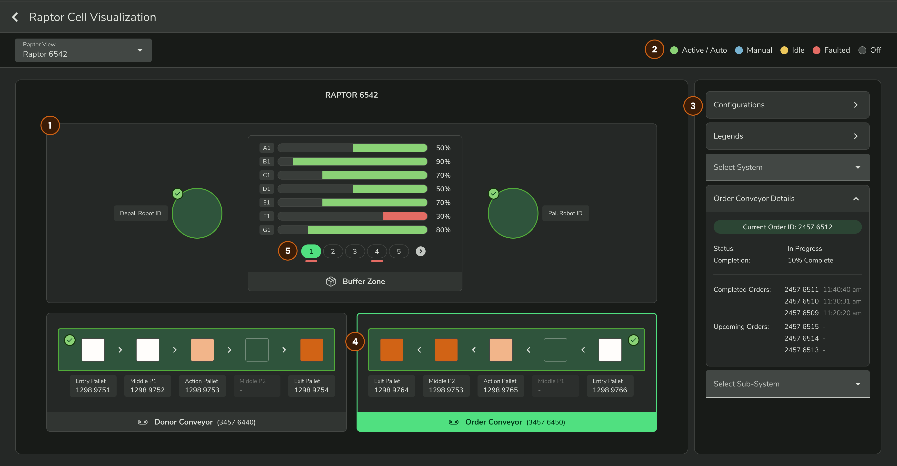
- Eventually, the RAPTOR unit was split into two halves - we needed to only show two machine units.
- Necessary legends were placed static on the top of the visualization.
- The side panel needed to have lots of contextual data - Main Conveyor Belt data, Pallet data, overall RAPTOR unit data. Opted for a progressive disclosure with collapsible panels.
- For users on computer, each individual machine/machine part can be selected directly by clicking on the visual.
- Other than clicking and seeing more information, visual cues were added to highlight warnings.
Initial UATs revealed that users preferred this over the previous table layout. Users said it was easier for them to monitor and map the progress when the data was presented anchored to the spatial context.